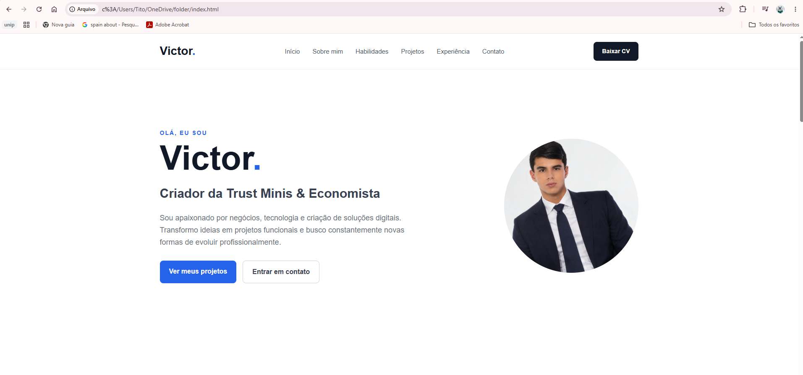
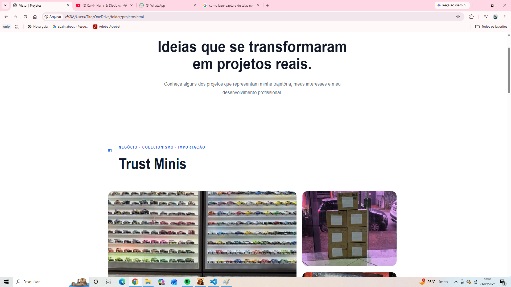
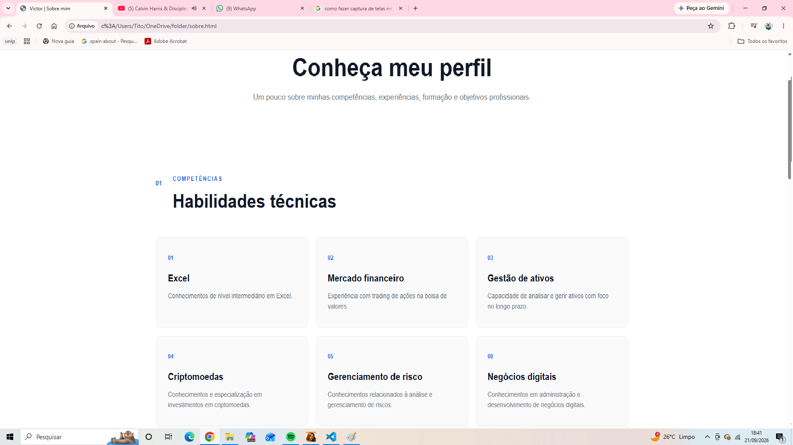

PROJETOS SELECIONADOS
Ideias que se transformaram
em projetos reais.
Conheça alguns dos projetos que representam minha
trajetória, meus interesses e meu desenvolvimento profissional.
NEGÓCIO • COLECIONISMO • IMPORTAÇÃO
Trust Minis


A HISTÓRIA
De uma paixão de infância
para um projeto de vida.
A história da Trust Minis começou muito antes de existir um nome ou uma marca. Ela nasceu de uma paixão que me acompanha desde a infância: o colecionismo.
Ainda criança, comecei minha jornada trocando cartas de Pokémon. Cada carta tinha seu valor, sua história e, principalmente, despertava em mim a vontade de conhecer cada vez mais aquele universo.
Aos 15 anos, decidi vender minha coleção de cartas e dar um novo passo. Foi então que comecei a comprar e vender Hot Wheels, descobrindo uma nova forma de transformar uma paixão em aprendizado, experiência e oportunidade.
Com o passar do tempo, o que começou de maneira simples foi crescendo. Passei a me dedicar cada vez mais ao mercado de miniaturas, aprofundando meus conhecimentos e buscando produtos além do mercado nacional, chegando também a realizar importações.
Hoje, a Trust Minis representa essa evolução: uma iniciativa construída a partir de uma paixão genuína pelo colecionismo e desenvolvida através de experiência, aprendizado e visão de negócio.
MAIS DO QUE UM PROJETO
Fortalecer o hobby
do colecionismo.
Meu objetivo com a Trust Minis vai além da compra e venda de miniaturas. Quero contribuir para o fortalecimento do hobby do colecionismo, aproximando pessoas desse universo e ajudando a manter viva a paixão que fez parte da minha própria história.
TRAJETÓRIA
Uma evolução construída ao longo do tempo.
Cartas de Pokémon
O primeiro contato com o universo do colecionismo através da troca de cartas.
Primeiros negócios
Venda da coleção de cartas e início da compra e venda de Hot Wheels.
Especialização em Hot Wheels
Aprofundamento no mercado de miniaturas, colecionismo e negociação.
Trust Minis
Atuação especialmente com Hot Wheels, incluindo operações de importação.
MEU PAPEL
DESENVOLVIMENTO WEB • HTML • CSS
Portfólio profissional



SOBRE O PROJETO
Meu espaço profissional
na internet.
Este site foi desenvolvido como meu espaço profissional digital, reunindo em uma única plataforma minha trajetória, minhas competências, projetos e formas de contato.
A proposta foi criar uma apresentação que fosse além de um currículo tradicional, permitindo apresentar de maneira mais visual quem sou, o que faço e os projetos que desenvolvo.
O projeto também representa parte do meu desenvolvimento na área de tecnologia, colocando em prática conhecimentos de HTML e CSS para estruturar e desenvolver a plataforma.
MEU PAPEL
Concepção, estrutura
e desenvolvimento.
Planejamento da estrutura do site, organização das páginas, desenvolvimento da interface, implementação em HTML e CSS e construção da apresentação visual do projeto.
VAMOS CONVERSAR?